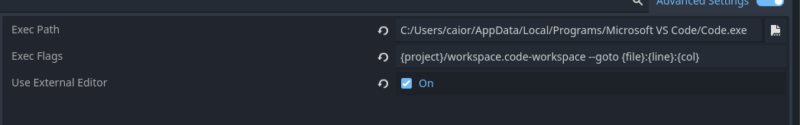

External Editor
-
Tips .
NeoVim - LSP
-
nvim -
--server 127.0.0.1:6004 --remote-send "<esc>:n {file}<CR>:call cursor({line},{col})<CR>"
VSCode - LSP and Open Externally
-
Godot Tools.
-
My setup:
-
 .
-
C:/Users/caior/AppData/Local/Programs/Microsoft VS Code/Code.exe-
codedidn’t work.
-
-
{project}/workspace.code-workspace --goto {file}:{line}:{col}
-
-
{project} --goto {file}:{line}:{col} -
For Multi-Workspaces:
-
--goto {file}:{line}:{col}
-
-
My issue .
-
https://github.com/godotengine/godot-vscode-plugin/issues/767
Visual
ANSI Colorization
-
About .
Debug
My Theme
Text Editor
-
(2024-05-03) Only differences from the Default Godot 4 theme:
-
Mark Color
-
ff66660f
-
-
Member Variable Color
-
e0b3fe
-
-
Icons for Scripts and Scenes
Quality of Life Suggestions
Text Editor
-
Option to automatically prefix a dragged variable using Ctrl with
_. -
Implement an option in the Text Editor to disable the ‘close all documentation tabs’ option.-
Disable the ‘Close all tabs’ option in the Text Editor and Editor.
-
-
Disable the ‘Undo’ option so it works only in the Text Editor.
Common Issues
FPS in the Editor
-
-
"You can already enforce a custom FPS cap in both 3.x and 4.x by changing 'Low Processor Mode Sleep (Usec)' in the Editor Settings (higher values result in a lower FPS cap – try
33333). Note that this is not effective if 'Update Continuously' is enabled." -
I set mine to 16666 to lock at 60fps, instead of the default 6900 which locks at 144fps.
-
This also locks the mouse FPS; it’s quite noticeable.
-
The information shown in the editor’s ‘View Frame Time’ is only an estimate of what the FPS would be under those conditions. It doesn’t show the actual FPS in the editor.
-